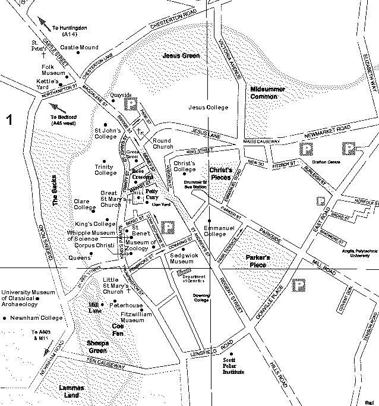

This is currently a prototype. More images will come when there are sunny days. Each image is approximately 30k.
This site will not post images of the insides of the Colleges. For that, you either have to visit their web sites, or (horror-of-horrors) visit Cambridge. These pictures just give a taste of Cambridge, and are deliberately kept low quality as I want the image system to fit inside 1MB (I only have 5MB on the web server).
For those technically minded, the images were taken using a Sony digital camera, and processed using John Bradley's xv program. The camera compresses the images using JPEG to 56kB, and they are then cropped and the quality further reduced (to reduce image size) by xv. The Sony digital camera is very neat, and uses PC-card (PCMCIA) flash cards, and stores 29 of the 'low quality' images on a 2MB card. However, its battery only seems to last for about an hour, or, as I walked round Cambridge, 17 pictures.
Part of the aim of these pages is to look at how feasible it is to provide a full spatio-temporal database of images and objects of a town, and how to interact with it. This page has been put together by wandering round with a camera and a map. A future version will be generated by automatically mapping as participants move around the town using GPS, and capturing images in real time for editing at base. Using this database a very accurate map of the town can be generated, complete with images and details of buildings in the area. Then it should be possible to create individual tourist guides, where tourists decide what they want to see and can plan their route using the images and information given.
The map is copyright Cambridge Arts Marketing. See also an aerial map. This map will be replaced in the near future (I hope) by one which you can zoom in and out of.
{kind=link}